Uma introdução de como realizar testes em aplicações web em diferentes tipos de navegadores
http://igorribeirolima.com.br/minicurso/saucelabs/
código fonte da apresentação
Sumário
Desenvolvimento Orientado a Comportamento
- Surgiu da evolução do Test Driven Development e Acceptance Test Driven Planning
- Utilizado para manter o foco do desenvolvimento na entrega de valores ao negócio
- Tecnologia e Negócio enxergam o mesmo sistema e da mesma forma
NodeJS
O que é Jasmine
É um framework de desenvolvimento orientado a comportamento para testar códigos JavaScript.
Não depende de nenhum outro framework JavaScript.
Não precisa de objetos DOM.
Tem um síntaxe tão clara que facilmente se excreve testes.
Conceitos essenciais
- Suites
describe("Meu objeto", function() { ... }); - Specs
it("deve ter a propriedade X definida", function() { ... }); - Expectations
expect( meu_objeto.X ).toBeDefined();
Matchers
- .toEqual
- .toBe
- .toMatch
- .toBeDefined
- .toBeUndefined
- .toBeNull
- .toBeTruthy
- .toBeFalsy
- .toContain
- .toBeLessThan
- .toBeGreaterThan
- .toThrow
- .not
Como testar localmente em vários browsers
Testem
- Test'em 'Scripts!
- Uma maneira mais prazerosa de rodar os testes em JS
- 'Testes podem ser chatos e tediosos'
- Fazer testes de forma mais fácis, faz com que a gente escreva mais testes
Instalando o Testem
npm install testem -g
Mãos na massa?
Vamos construir uma calculadora?
Configurando o Testem
Formato JSON ou YAML
//criar o arquivo testem.json na raiz do projeto
{
"framework": "jasmine",
"src_files": [
"calculadora.js",
"calculadora_spec.js"
]
}
mais detalhes sobre a configuração
Iniciando a especificação / código
//criar o arquivo calculadora.js na raiz do projeto
(function (global) {
global.Calculadora = {
};
})(this);
//criar o arquivo calculadora_spec.js na raiz do projeto
describe("Minha calculadora", function() {
it("um exemplo de especificação", function() {
expect(true).toBe(true);
});
});
Rodando o Testem
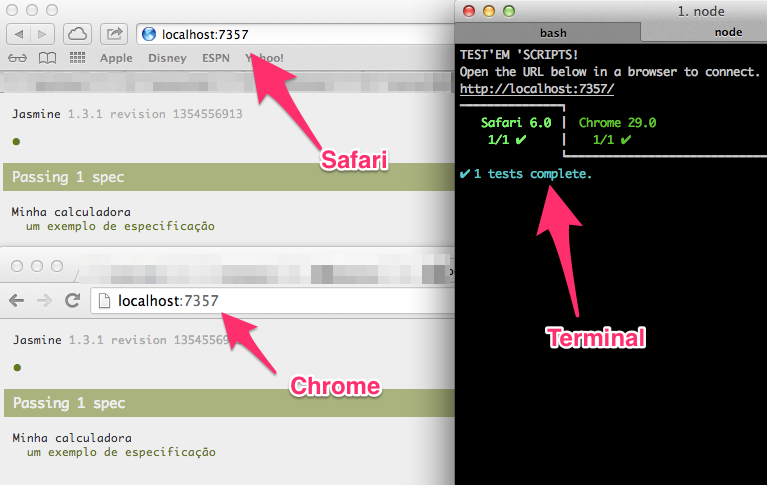Hands on...
//criando uma especificação de soma
it("a soma 2 + 2 DEVE ser 4", function() {
expect( Calculadora.somar( 2, 2 ) ).toBe( 4 );
});
//espere o teste falhar, então implemente o código.
Hands on...
//implementando o que foi exigido na especificação
somar: function() {
return 4;
}
Hands on...
//nova especificação de soma
it("a soma 2 + 2 + 3 + 1 DEVE ser 8", function() {
expect( Calculadora.somar( 2, 2, 3, 1 ) ).toBe( 8 );
});
//espere o teste falhar, então implemente o código.
Hands on...
//implementando o especificado
somar: function() {
var soma = 0, i = undefined;
for( i=0; i < arguments.length; i++ ) {
soma += arguments[i];
}
return soma;
}
Hands on...
//implemente uma espeficação por vez
it("a subtração entre 2 e 2 DEVE ser 0", function() {
expect( Calculadora.subtrair(2, 2) ).toBe( 0 );
});
it("a subtração entre 3 e 4 DEVE ser -1", function() {
expect( Calculadora.subtrair(3, 4) ).toBe( -1 );
});
it("a multiplicação entre 3 e 2 DEVE ser 6", function() {
expect( Calculadora.multiplicar(3, 2) ).toBe( 6 );
});
Hands on...
//implemente uma espeficação por vez
it("a multiplicação entre 3, 2 e 4 DEVE ser 24", function() {
expect( Calculadora.multiplicar(3, 2, 4) ).toBe( 24 );
});
it("a divisao entre 2 e 2 DEVE ser 1", function() {
expect( Calculadora.dividir(2, 2) ).toBe( 1 );
});
it("a divisao entre 6 e 2 DEVE ser 3", function() {
expect( Calculadora.dividir(6, 2) ).toBe( 3 );
});
Utilizando navegadores de diversos Sistemas Operacionais
SauceLabs

Plataforma que possibilita realizar testes automáticos ou manuais em aplicações móveis e web (incluindo navegadores como Intenert Explorer, Opera, Safari, Android, iPhone, Chrome, etc).
Permite executar os testes em diversas linguagem de programação (java, python, ruby, nodejs, c#, php, perl).
Criando uma conta no SauceLabs
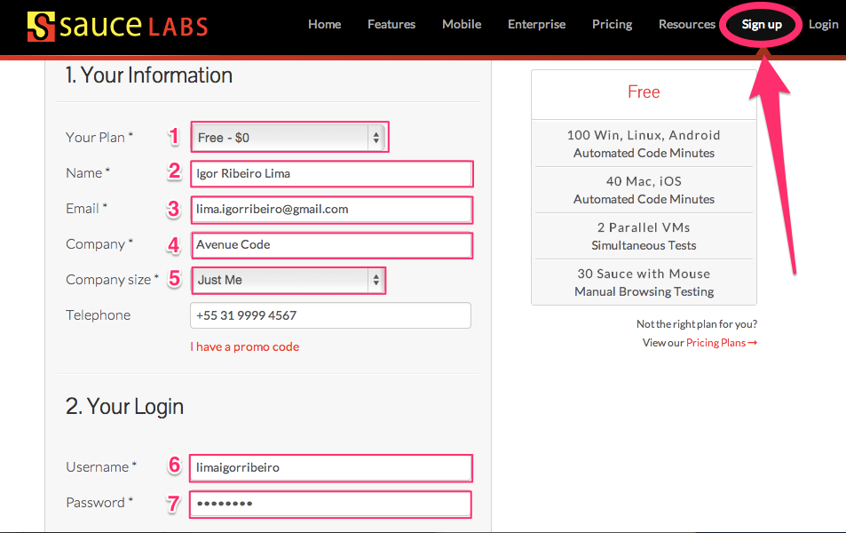Acessando a conta SauceLabs
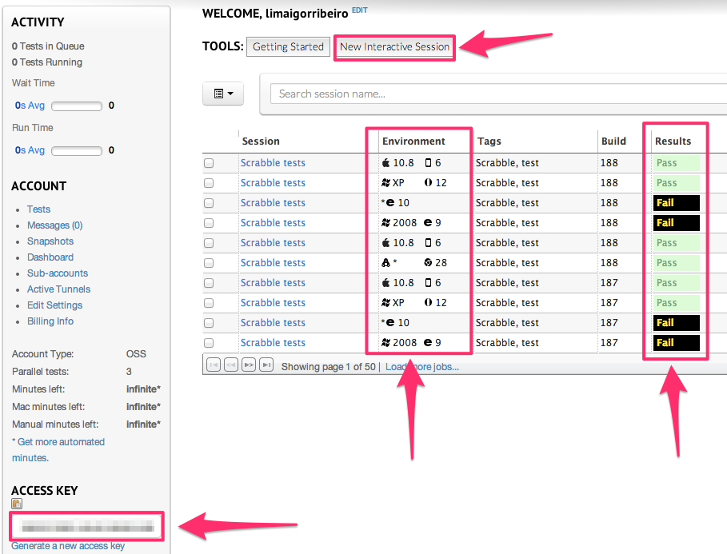Acesso local via VPN
- Download Sauce Connect
- Execute
java -jar Sauce-Connect.jar \ --tunnel-identifier "minicurso" \ $SAUCE_USERNAME $SAUCE_ACCESS_KEY
Testando em um iPad
- Execute o Testem utilizando uma outra porta
testem --port=8080
- Crie uma nova sessão do SauceLabs usando um iPad 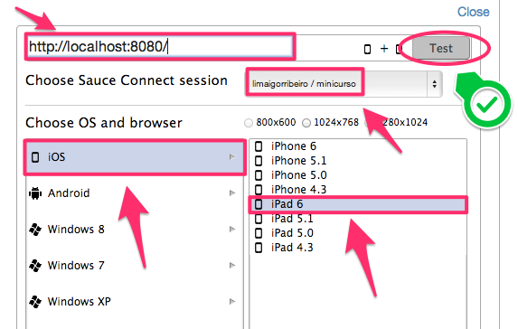
Resultado no Testem
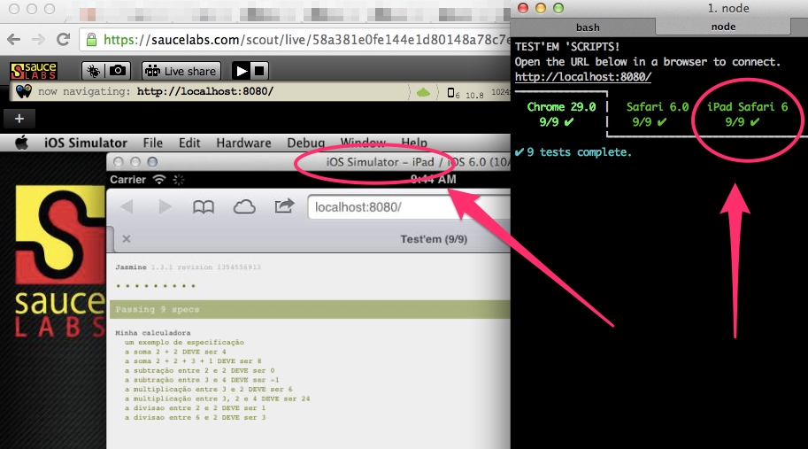Simulando ações do usuários
- As ações do usuário não dar para ser testadas apenas chamando uma função
- O usuário pode clicar, dar duplo clique, arrastar objetos, selecionar textos e etc
Algumas ferramentas que ajudam a simular ações do usuário
Vows
Desenvolvimento orientado a comportamento assíncrono para NodeJS.
Há dois motivos para querer testes assíncronos:
- O primeiro e óbvio é que o NodeJS é assíncrono e por isso os testes também DEVE ser.
- Segundo motivo é fazer com que os testes, os quais lidam com entrada e saída de dados, rodem mais rápido.
Conceitos sobre Vows
- Suite: é um objeto que contêm um ou mais batches, e pode ser executado ou exportado.
- Batch: representa uma estrutura de contextos.
- Context: é um objeto que pode conter:
- um topic (opcional)
- nenhum ou mais vows
- nenhum ou mais sub-contexts
- Topic: pode ser um valor ou uma função a qual pode ser um código assíncrono.
- Vow: é uma função que recebe o topic como um argumento e roda assertivas no topic.
Chai
É uma biblioteca de assertivas BDD/TDD para NodeJS e navegadores, a qual pode ser 'graciosamente' utilizada com qualquer framework de teste JS.
Exemplo:
expect(foo).to.not.equal('bar');
expect(goodFn).to.not.throw(Error);
expect(foo).to.deep.equal({ bar: 'baz' });
expect('test').to.be.a('string');
expect({ foo: 'bar' }).to.be.an('object');
expect('everthing').to.be.ok;
WD.js
Um cliente NodeJS para webdriver/selenium 2.
Métodos suportados:
|
|
Um exemplo
/**criando arquivo para acessar o PhantomJS como webdriver
nome do arquivo: config-wd-using-phantom.js */
var exports = module.exports = {},
webdriver = require('wd'),
browser = exports.browser = webdriver.remote({
hostname: "localhost",
port: 8910
});
process.on( 'uncaughtException', function(err) {
console.error('Caught exception: ' + err.stack );
});
/**criando o arquivo apenas-um-exemplo.js */
var vows = require('vows'),
expect = require('chai').expect,
browser = require('./config-wd-using-phantom.js').browser;
vows.describe('Apenas um exemplo')
.addBatch({
'Criando uma nova sessão no WebDriver': { /** ... */ }
})
.addBatch({
'Acessando a página de teste do SauceLabs': { /** ... */ }
})
.addBatch({
'Verificando o título da página': { /** ... */ }
})
.addBatch({
'Fechando o navegador': { /** ... */ }
}).export(module);
/**criando uma nova sessão no WebDriver */
.addBatch({
'Criando uma nova sessão no WebDriver': {
topic: function() {
var callback = this.callback;
browser.init( {}, function(err, sessionID, capabilities) {
callback( err );
});
},
'Sessão criada': function() { /**...*/ }
}
})
/**acessando a página de teste do SauceLabs */
.addBatch({
'Acessando a página de teste do SauceLabs': {
topic: function() {
var callback = this.callback;
browser.get( 'http://saucelabs.com/test/guinea-pig', function(err) {
callback( err );
});
},
'Página de teste aberta': function() { /**...*/ }
}
})
/**verificando o título da página */
.addBatch({
'Verificando o título da página': {
topic: function() {
var callback = this.callback;
browser.title( function(err, title) {
callback( err, title );
});
},
"O título da página deve conter 'Sauce Labs'": function(title) {
expect(title).to.contain('Sauce Labs');
},
"O título da página deve conter 'page title'": function(title) {
expect(title).to.contain('page title');
},
"O título da página deve conter 'I am a'": function(title) {
expect(title).to.contain('I am a');
}
}
})
/**fechando o navegador */
.addBatch({
'Fechando o navegador': {
topic: function() {
var callback = this.callback;
browser.quit( function(err){
callback( err );
});
},
'Fim': function() { /**...*/ }
}
})
Rodando o teste de exemplo
#instalando o PhantomJS e o Vows como comandos globais
npm install -g phantomjs vows
#instalando dependências do NodeJS
npm install wd vows chai
#rodando o PhantomJS como webdriver
phantomjs --webdriver=localhost:8910
#rodando o vows
vows apenas-um-exemplo.js --spec
/**criando arquivo (config-wd-using-saucelabs.js) para acessar o SauceLabs como webdriver */
var exports = module.exports = {},
webdriver = require('wd'),
desired = exports.desired = {
"browserName": "chrome", "version": "", "platform": "Linux",
"tags": ["segunda-etapa", "minicurso"], "name": "Teste de interface da 2a etapa",
"public": "public", "build": "primeiro build", "tunnel-identifier": "minicurso", "record-video": true
},
browser = exports.browser = webdriver.remote({
hostname: "ondemand.saucelabs.com", port: 80,
user: process.env.SAUCE_USERNAME, pwd: process.env.SAUCE_ACCESS_KEY
});
process.on( 'uncaughtException', function(err) {
console.error('Caught exception: ' + err.stack );
});
/**motificando o arquivo apenas-um-exemplo.js */
var vows = require('vows'),
expect = require('chai').expect,
config = require('./config-wd-using-saucelabs.js'),
browser = config.browser,
desired = config.desired;
vows.describe('Apenas um exemplo')
.addBatch({
'Criando uma nova sessão no WebDriver': {
topic: function() {
var callback = this.callback;
browser.init( desired, function(err, sessionID, capabilities) {
callback( err );
});
},
'Sessão criada': function() { /**...*/ }
}
})
Rodando o teste de exemplo pelo SauceLabs
#iniciando a VPN
java -jar Sauce-Connect.jar \
--tunnel-identifier "minicurso" \
$SAUCE_USERNAME $SAUCE_ACCESS_KEY
#rodando o vows
vows apenas-um-exemplo.js --spec
Visualizando o teste executado
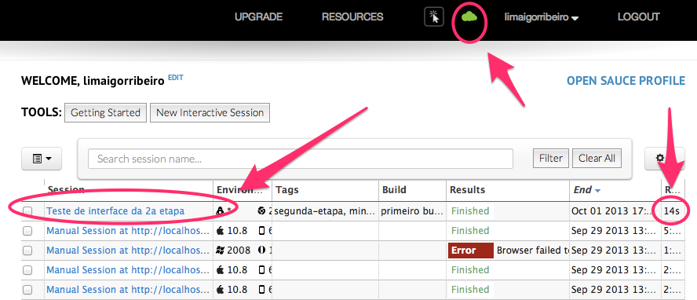Assistindo o teste executado
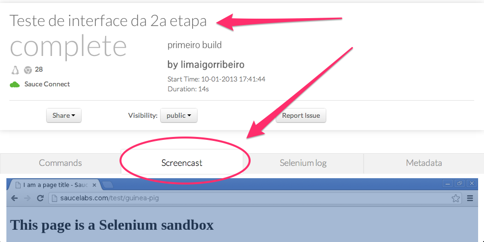Voltando à nossa calculadora...
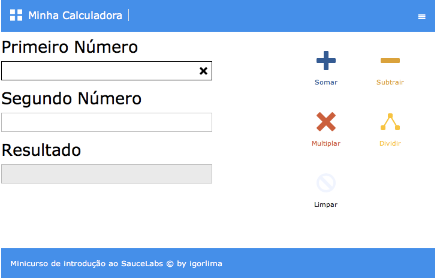Nossa calculadora responsiva...
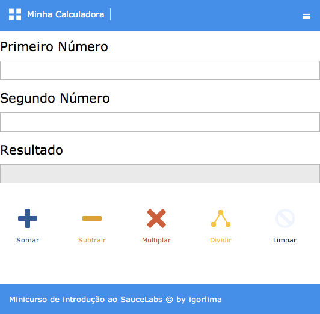Baixando o código fonte
#clonando o projeto...
git clone git@github.com:igorlima/minicurso-de-introducao-ao-saucelabs.git
#indo para a pasta que contem o codigo da calculadora
cd minicurso-de-introducao-ao-saucelabs/src/terceira-etapa/
#rodando o phantomjs como webdriver
phantomjs --webdriver=localhost:8910
#rodando o GruntJS
#caso esteja usando o Windows:
# FAVOR habilitar o plugin 'grunt-vows-runner' ao invés de 'grunt-vows'
grunt watch
Quanto menos houver tarefas repetitivas como minificação, compilação, execução de testes e etc, mais fácil tende a ficar a execução do trabalho.Grunt JS
"Automatização"Grunt JS
Infelizmente nossa calculadora tem uns probleminhas :-(
- O botão de limpar não funciona
- O botão de limpar somente o primeiro número também não funciona
- A mesma coisa acontece com o segundo campo: também não funciona
- Vamos concertar? Seguindo o mesmo raciocínio no início?
- Primeiro o teste
- Depois a gente codifica
- Animados?
/**criando o arquivo spec/meus-testes-2.js */
var vows = require('vows'),
expect = require('chai').expect,
browser = require('./config-wd-using-phantom.js').browser;
vows.describe('Criando uma nova sessão no WebDriver')
.addBatch({
'Criando uma nova sessão no WebDriver': { /** ... */ }
})
.addBatch({
'Acessando a página da calculadora': { /** ... */ }
})
.addBatch({
'...': { /** ... */ }
})
.addBatch({
'Fechando o navegador': { /** ... */ }
}).export(module);
/**Adicionando o novo arquivo de teste no Grunttile */
vows: {
all: {
src: ['spec/meus-testes.js', 'spec/meus-testes-2.js']
}
},
watch: {
all: {
files: [
'source/**/*',
'spec/meus-testes.js',
'spec/meus-testes-2.js'
],
tasks: ['connect', 'vows']
}
}
/**Digitando números nos campos */
.addBatch({
'Selecionando o campo do primeiro número': {
topic: function() {
/** ... */
},
"Digitando o número '20'": {
/** ... */
}
}
})
.addBatch({
'Selecionando o campo do segundo número': {
topic: function() {
/** ... */
},
"Digitando o número '4'": {
/** ... */
}
}
})
/**Clicando no botão limpar */
.addBatch({
'Clicando no botão de limpar': {
topic: function() {
var callback = this.callback;
browser.elementByCssSelector( 'button#btnLimpar', function(err, botao_de_limpar) {
err && callback(err);
botao_de_limpar.click( function(err){
callback(err, botao_de_limpar);
})
});
},
'Selecionando o campo do primeiro número': {
/** ... */
}
}
})
/**Verificando se o primerio campo está vazio */
'Selecionando o campo do primeiro número': {
topic: function(botao_de_limpar) {
var callback = this.callback;
browser.elementByCssSelector( 'div#primeiro-numero .input-control.text input',
function(err, campo_do_primeiro_numero) {
callback( err, campo_do_primeiro_numero );
});
},
"Pegando o valor contido no primerio campo": {
topic: function(campo_do_primeiro_numero, botao_de_limpar) {
var callback = this.callback;
campo_do_primeiro_numero.getValue( function(err, primeiro_numero) {
callback( err, primeiro_numero );
});
},
'O valor do primerio campo DEVE estar vazio': function(primeiro_numero) {
expect( primeiro_numero ).to.be.empty;
}
}
}
Agora que implementamos o teste, vamos codar
/**modificando o arquivo source/js/app.js */
BOTAO.LIMPAR.click( function(){
INPUT.PRIMEIRO_NUMERO.val( '' );
});
/**Verificando se o segundo campo está vazio */
'Selecionando o campo do segundo número': {
topic: function(botao_de_limpar) {
var callback = this.callback;
browser.elementByCssSelector( 'div#segundo-numero .input-control.text input',
function(err, campo_do_segundo_numero) {
callback( err, campo_do_segundo_numero );
});
},
"Pegando o valor contido no segundo campo": {
topic: function(campo_do_segundo_numero, botao_de_limpar) {
var callback = this.callback;
campo_do_segundo_numero.getValue( function(err, segundo_numero) {
callback( err, segundo_numero );
});
},
'O valor do segundo campo DEVE estar vazio': function(segundo_numero) {
expect( segundo_numero ).to.be.empty;
}
}
}
Agora que implementamos o teste, vamos codar
/**modificando o arquivo source/js/app.js */
BOTAO.LIMPAR.click( function(){
INPUT.PRIMEIRO_NUMERO.val( '' );
INPUT.SEGUNDO_NUMERO.val( '' );
});
DICA
Evite ao máximo abrir o browser toda hora. No nosso exemplo, estamos abrindo o browser duas vezes. Isso é ruim. É lento.
Evite ao máximo repetir código. No nosso exemplo, copiamos e colamos muito. Isso é ruim. Dificulta a manutenabilidade.
Como tarefa de casa:
Na documentação do WD tem todas as ações possíveis que podem ser feitas. Treine. Caso tenha dúvidas, fique a vontade e me mande email!!
Animados agora para Integração Contínua?
:-)
...
GitHub
Após criar uma conta no GitHub:
#identificando dos commits
git config --global user.name "Nome Sobrenome"
git config --global user.email "seu_email@email.com"
#criando chave SSH
ssh-keygen -t rsa -C "minicurso - seu_email@email.com"
#testando chave SSH (aparecerá uma mensagem do tipo):
# "Hi igorlima! You've successfully authenticated,
# but GitHub does not provide shell access."
ssh -T git@github.com
SSH Key no Github...
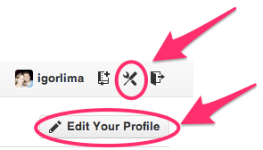 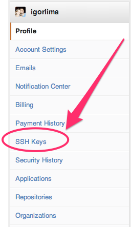Lista SSH Key...
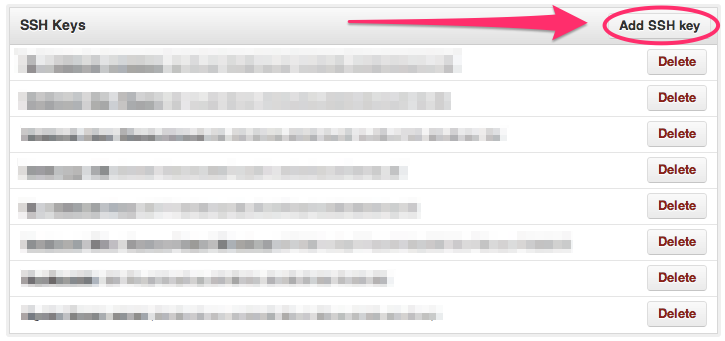Adicionando uma nova SSH Key...
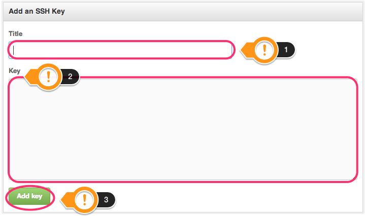Dando um Fork no projeto da calculadora
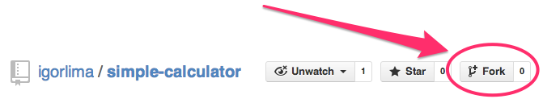Ativando o Travis-CI com o Github
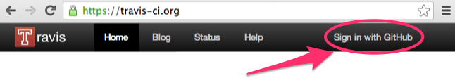 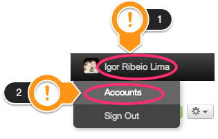 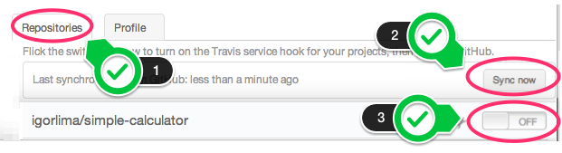Entendendo o arquivo .travis.yml
Toda vez que houver um commit no projeto, os testes automatizados serão acionados e, se tudo estiver OK, uma nova versão da aplicação será publicada automaticamente.
Outras Alternativas

"Accumulation of knowledge generates more ignorance."Stuart Firestein
Muito Obrigado
Gostou? então dê um Star (uma estrela) no GitHub
Críticas / dúvidas / sugestões? então abra uma Issue ou Fork o projeto no GitHub